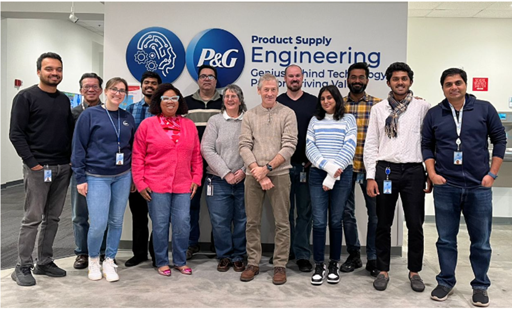
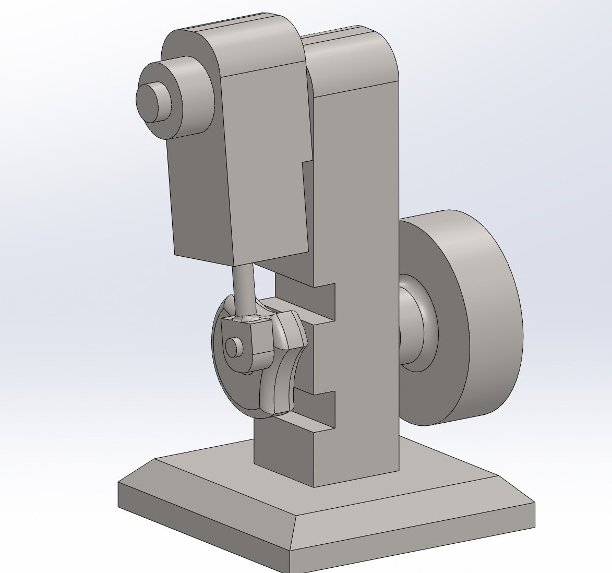
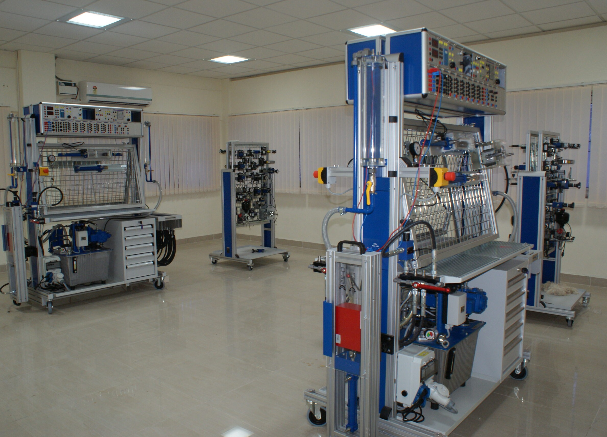
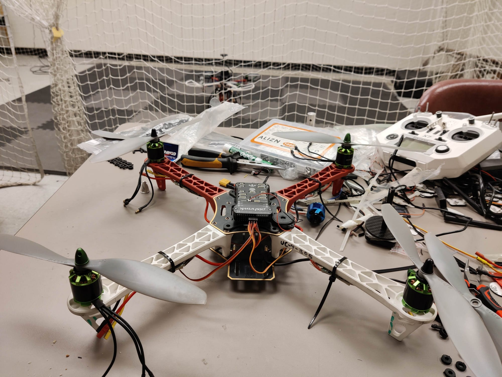
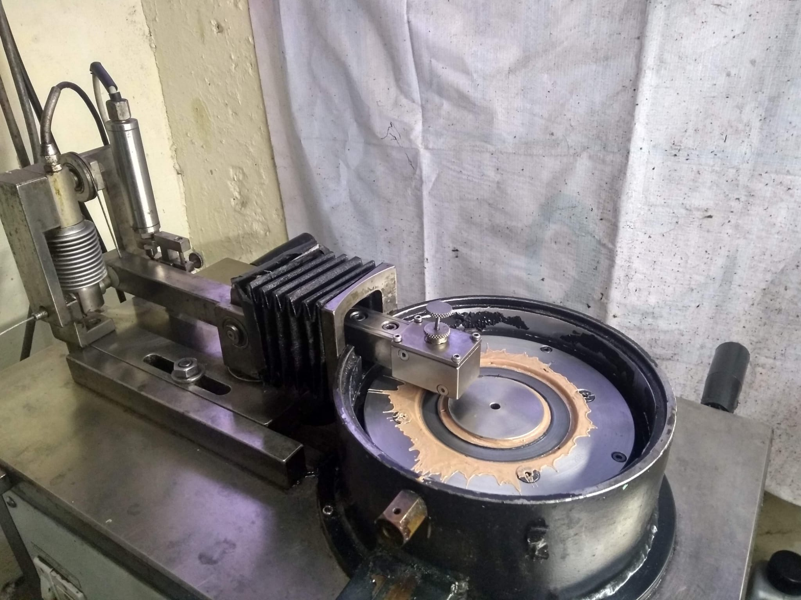

Hi! I’m Amal, welcome to my website. I am a mechanical engineer, roboticist and a researcher. I recently obtained my masters in Mechanical Engineering from the University of Cincinnati,
where I had the privilege of developing robotic (UAV) systems, conduct CAD design analysis,
perform flight tests and learn more about mechanical and automation technologies.
I enjoy taking my time to understand the processes behind any logical system in the domains of healthcare, robotics, aviation, manufacturing and automation. I believe in learning on the job and I like pursuing ambitious projects.
EXPERIENCE

Procter & Gamble - Research Assistant
(Feb 2023 - July 2024; Cincinnati,OH)
Worked with cross functional engineering teams to improve high volume manufacturing systems and quality control test methods for healthcare products. My work consisted of designing process flows,
statistical analysis to find root cause, ensuring compliance with SOPs, ISO standards and company procedures.
Skills: Six Sigma Methods, OQ & PQ Protocols, Process Verification, Risk Assessment

Internshala - Product Development Engineer
(June 2020 - July 2021; India)
Designed mechanical tool components in SolidWorks according to CAD drawings to meet design specifications. Conducted design analysis and verification through simulation to improve product performance.
On the right is an assembled air piston model that I designed, one of the designs I was involved in.
Skills: Geometric Dimensioning and Tolerancing, Design for Manufacturing and Assembly, CAD, Kaizen methods

Bosch Rexroth India - Mechanical Engineering Intern
(Jan 2018 - May 2018; Chennai, India)
Conducted extensive experiments with pneumatic, hydraulic and electro-hydraulic test rigs to evaluate process limits and understood its applications.
The image shows the many experimental apparatus that I worked with during my tenure.
Skills: Pneumatics, Accuators, Electro-Hydraulics, Microcontrollers, PLC programming
EDUCATION

Master of Science - University of Cincinnati
(Aug 2021 - Aug 2024; Cincinnati,OH)
I had the privilege of pursuing my thesis project in the Cooperative Distributed Systems Lab, which involved designing and developing
intelligent solutions using state-of-the-art technologies such as Deep Learning, Robotics, 3D Printing etc.
On the right is a picture of my quadcopter (undergoing repairs) that I designed for flight tests.
I also worked on other projects utilizing ground robots, structural analysis and complex systems.
Skills: UAVs, Machine Learning, Fabrication, CAD, sensors integration

Bachelor of Science - SRM Institute
(June 2016 - May 2020; Chennai, India)
I pursed my undergraduate in Mechanical Engineering. Relevant coursework includes Fluid Dynamics, Heat & Mass Transfer, Operations Research, Numerical Methods, Fourier Transforms and CAD Engineering.
On the right is a picture of a test rig built to experiment the lubrication performance under different conditions of stress, temperature and viscosity. I carried out my degree product in this domain to
investigate industrial fluids performance using SPC techniques.
Skills: Mechanical Engineering, Fluid Dynamics, Electronics, CAD, Statistics
ABOUT ME
- Thinking of unconventional solutions to problems
- Learning from my mistakes
- Bringing people together to achieve an aligned purpose
- Curiosity: Learning new technologies and exploring challenges
- Creativity: Using my skillset to find unique perspectives for simple design
- Honesty: Transparency between teams and working ethically
- Contribution: Finding satisfaction after a job well done
- Programming: Python, MATLAB, C++, Git
- Analysis: SQL, Minitab, R, Microsoft Suite (Excel, Powerpoint etc), Power BI
- Operations: Lean Six Sigma, Kaizen principles, FMEA
- CAD: SolidWorks, Catia v6, Fusion 360
- Design Analysis: GD&T, DFA/DFM, V&V
- Simulation (FEA): SolidWorks Simulation, ANSYS Mechanical
- Robotics: ROS, Raspberry Pi, QGroundControl, sensors, actuators, ESCs
- Fabrication: Manual and CNC Mill and Lathe, 3D Printing(FDM, DMLS, SLA), Soldering